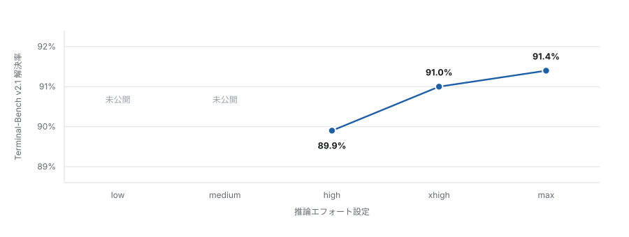
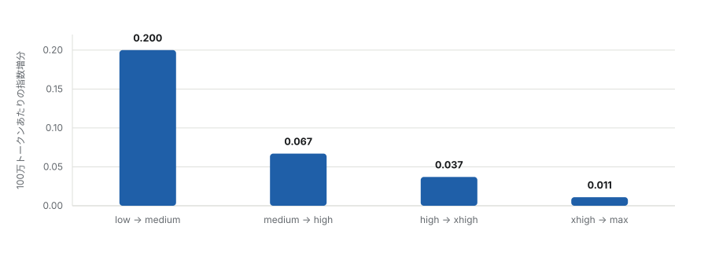
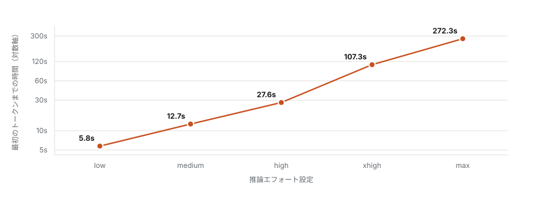

推論エフォートは品質のつまみではない。すでにコンテキストウィンドウに入っている材料に対して、どれだけ熟慮に費やしてよいかという予算である。この区別が分析全体を決定する。エフォートを上げるとは、モデルが答えを確定する前により多くのトークンを推論に費やせるようにすることであり、モデルがすでに見ている材料から答えを導くこと自体が難しい場合には有効である。しかし目の前にある材料が誤っている場合には、まったく効かない。したがって Fable 5.1 の 5 段階は、熟慮予算曲線上の 5 点として読むのが適切であり、問うべきはその曲線がどこでコストを回収しなくなるかである。
第一節エフォートが実際に制御しているもの
Fable 5.1 には low、medium、high、xhigh、max の 5 段階が用意されている。Anthropic は Claude Code では high を、コンシューマ向けの各面では medium を既定値とし、5.1 の low および medium がすでに全エフォートの Fable 5 に匹敵すると述べている（Anthropic、2026年9月）。Artificial Analysis はリリース前に 5 段階すべてを評価し、同一の Intelligence Index v4.2 スイートを各設定で実行した。これはワークロードを固定したままエフォート引数のみを変動させた、唯一の公開データセットである。
ワークロードを固定している点は、見た目以上に重要である。公開されているエフォート設定の比較はいずれも、固定された課題集合に対してモデルがどれだけ熟慮に費やしたかの比較であって、形の異なる課題における性能の比較ではない。したがって以下の曲線が精確に測定しているのは一点、すなわち問題が固定され正しく指定されている条件下での、追加的熟慮の収益である。大規模な実コードベースで支配的となる失敗様式、つまり誤ったファイルから問題が指定されるという事態については、この曲線は何も語らない。この点は最終節で改めて扱う。最も重要でありながら、ベンチマークが最も不得手とする部分だからである。
第二節投じたトークンに対して得られる知能
下図の横軸は対数である。この選択は装飾ではない。対数軸上では、支出が倍増するごとに一定の収益が得られる関係は直線として現れる。したがって下向きの屈曲は尺度の産物ではなく、実際の収穫逓減を意味する。Fable 5.1 はほぼ即座に屈曲する。

この形状は、有限の解空間をもつ探索過程に共通するものである。初期の熟慮は数の多い安価な誤りを除去し、後期の熟慮は残余に取り組む。残余はより小さく、かつより困難である。モデルごとに異なるのは、その肘がどこに位置するかである。Fable 5.1 では肘は high にあり、high より上はすべて残余を買っていることになる。
第三節コーディングでは曲線が最も早く死ぬ
Terminal-Bench v2.1 は同指数のエージェント型コーディング要素であり、長時間にわたるターミナル作業を対象とする。コーディングエージェントが実際に与えられる種類の課題に対する、公開されたもののなかで最も近い代理指標である。Artificial Analysis はこれを上位 3 段階についてのみ公表している。

89.9、91.0、91.4 という数値をスコアとして読めば、控えめではあるが実質的な進歩に見える。しかし誤り予算として読むと、像はより率直になる。high では 100 課題あたり 10.1 件が失敗し、max では 8.6 件が失敗する。4.3 倍のトークンを投じて除去できるのは 100 件あたり 1.5 件であり、残る 8.6 件はそのまま残る。この残余は熟慮不足による失敗ではない。もしそうであれば、より多くの熟慮が解消していたはずである。それらは別種の失敗であり、エフォートのつまみはそこに作用しない。
この領域ではベンチマークの飽和も問題になり始める。ベンチマーク上端における 1.5 ポイントの幅は、ベンチマーク自体の分解能に近い。公開された数値から言えるのは max が high より大きく優れてはいないということであり、そもそも優れているかどうかを確信をもって述べるには粗すぎる。
第四節限界収益は 18 分の 1 に崩れる
フロンティアを階差にとると、意思決定を実際に駆動すべき量が得られる。すなわち、各段階の引き上げにおいて追加的に投じた 100 万出力トークンあたりに得られる指数ポイントである。

high はこの値が 0.04 を下回る直前の設定であり、どこかに線を引く必要があるならば妥当な位置である。絶対量で見ても同じ崩壊が効率として現れる。low では 100 万トークンあたり 2.68 指数ポイント、high では 1.23、max では 0.30 である。
中核となる取引
high は、出力トークンの 23 パーセントで、max の Terminal-Bench 性能の 98 パーセントを実現する。この 1 つの比が実務上の議論の大半を担っており、Claude Code の既定値がその位置に置かれている理由でもある。
第五節最も悪くスケールするのはレイテンシである
トークンは請求書に現れるコストである。最初のトークンまでの時間は体感されるコストであり、価格よりもはるかに悪くスケールする。出力速度自体はエフォートとともに毎秒 52.8 トークンから 69.5 トークンへ上昇する。そのため課題あたりのコストが全域で 3.6 倍にとどまる一方、何かが現れるまでの待ち時間は 47 倍に伸びる。

機序は単純である。エフォート予算は最初の出力トークンが放出される前に消費されるため、熟慮のコスト全体が待ち時間に前倒しされる。4 分の停止は 4 分の損失にとどまらない。開発者が仮説をワーキングメモリに保持したままエージェントにそれを検証させる、というループを断ち切る。そしてそのループこそが、対話的コーディングエージェントの価値の大半である。
データ全データ表
| エフォート | 指数 v4.2 | Terminal-Bench | 出力トークン | 課題あたり | 初トークンまで | 100万トークンあたり |
|---|---|---|---|---|---|---|
| low | 51 | 未公開 | 19M | $1.70 | 5.8秒 | 2.68 |
| medium | 53 | 未公開 | 29M | $2.14 | 12.7秒 | 1.83 |
| high | 54 | 89.9% | 44M | $2.86 | 27.6秒 | 1.23 |
| xhigh | 56 | 91.0% | 98M | $4.64 | 107.3秒 | 0.57 |
| max | 57 | 91.4% | 190M | $6.12 | 272.3秒 | 0.30 |
出力トークン数とコストは Intelligence Index スイート全体の実行に対するものであり、Artificial Analysis が Adaptive Reasoning, Default Fallback の各構成について測定した値である。価格は入力 100 万トークンあたり 10 ドル、出力 100 万トークンあたり 50 ドル、キャッシュ読み出しは 100 万トークンあたり 0.25 ドルである。
第六節実務上の帰結
high が擁護可能な既定値であり、Claude Code ではすでに既定値になっている。曲線の肘に位置しており、上に挙げた「23 パーセントで 98 パーセント」という取引がその根拠のすべてである。
medium は通常受けている以上の検討に値する。Anthropic の同等性の主張が成り立つならば、5.1 の medium は全エフォートの Fable 5 に相当し、しかも最初のトークンまで 27.6 秒ではなく 12.7 秒である。足場づくり、テスト記述、機械的なリファクタリング、その他答えの形がすでに分かっている作業では、レイテンシが半減することの価値は指数 2 ポイントを上回る。これはベンチマークではなく作業構成に依存するため、推論するよりも直接試すべき事柄である。
xhigh は課題単位のエスカレーションであってセッション既定値ではない。2.2 倍のトークンで Terminal-Bench 1.1 パーセントポイントを買うのは常設の取り決めとしては拙劣であり、特定の問題にすでに 1 時間を費やした場面での単発の判断としてはまったく妥当である。max はコーディング用途ではさらに正当化が難しい。1.9 倍のトークンと 2.5 倍の待ち時間に対して、xhigh より 0.4 ポイントである。その用途は編集ループではなく、単発の研究水準の推論にある。
第七節このエビデンスが決着させられないこと
同一の出典から、2 組の数値が食い違っている。Artificial Analysis のローンチ記事は Intelligence Index を 58 から 66、出力トークンを 1310 万から 1 億 4370 万と記載している。一方、同社のモデル別ページおよびリリース比較表は 51 から 57、1900 万から 1 億 9000 万としている。本稿は一貫してモデル別ページを採用した。5 段階すべてで内的に整合しており、設定ごとのコストとレイテンシを載せているのがこちらだけだからである。曲線の形状はいずれの組でも変わらない。絶対水準は確定しておらず、筆者はこの不一致を解消できていない。
low と medium には公開された Terminal-Bench スコアがないため、コーディングの曲線は 5 点ではなく 3 点に依拠しており、最も安価な 2 設定は複合指数のみから推定されている。low と medium に関する Anthropic の同等性の主張はベンダーによる主張であり、コーディングベンチマークの水準で独立に評価されてはいない。
より大きな限界は測定ではなく構成概念にある。これらは、ハーネスによってコンテキストが正しく供給された課題群にわたる評価スイートの集計値である。ある程度の規模をもつコードベースにおいて支配的な失敗様式は、正しいファイルに対する浅い推論ではない。誤ったファイルに対する確信に満ちた推論である。エフォートを上げることはこの失敗を改善するのではなく悪化させる。同じ誤った前提から、より精緻でより尤もらしい推論を生み出すからである。エフォートのつまみとコンテキスト取得の問題はほぼ直交しており、前者をいくら増やしても後者の代替にはならない。
保持すべき区別
推論の失敗とは、関連するコードが目の前にありながら誤った結論を導いた場合である。取得の失敗とは、誤ったファイルを編集した、呼び出し元を見落とした、リポジトリ内に別名で存在するインタフェースを捏造した、といった場合である。前者こそがエフォートのつまみの用途である。後者はスコープ指定の領分であり、リポジトリ規模とともに拡大するのはこちらである。
公開データが答えているのは、多くの人がそれに問うている問いよりも狭い問いである。Fable 5.1 において追加的熟慮が high のあたりで採算を失うことは、かなり説得的に示されている。しかしモデルが正しいコードを見ているかどうかについては何も語らない。大規模なリポジトリでは、まさにそれが結果を決める問いである。
出典
一次データ。Artificial Analysis、Claude Fable 5.1 の low / medium / high / xhigh / max 各モデルページ、Claude Fable 5.1 リリース比較表、Terminal-Bench v2.1 ベンチマークリーダーボード、および記事 "Claude Fable 5.1 tops the Artificial Analysis Intelligence Index"。いずれも 2026 年 9 月 7 日取得。
ベンダー資料。Anthropic「Introducing Claude Fable 5.1 and Claude Mythos 5.1」2026 年 9 月。各面における既定エフォート、および low・medium の同等性の主張について。
本ページの導出量（100 万トークンあたりの指数ポイント、段階ごとの限界収益、誤り予算による定式化、トークンおよびレイテンシの倍率）はすべて第六節の表から計算したものであり、出典からそのまま引いたものではない。同表から再現できる。Artificial Analysis の 2 組の数値が食い違う箇所については、第七節で解消せずに明示している。
AI 支援の開示。データ取得、計算、図版生成、草稿作成および対訳翻訳に AI 支援を用いた。本稿のためにベンダーから直接提供されたデータはなく、ベンチマークを独自に実行してもいない。ここに示したスコアはすべて公開された第三者またはベンダーの数値である。
日本語版は英語版と同一の分析の翻訳であり、独立した検討ではない。英語版はこちら。